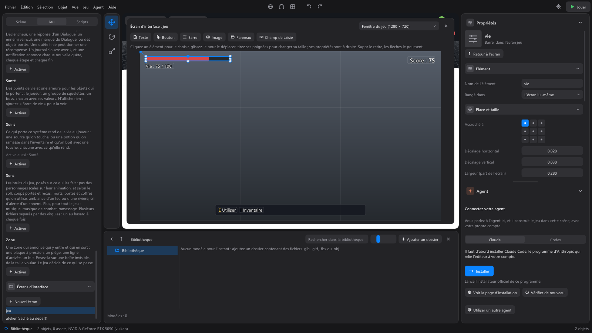

The game interface: menus, lists, text fields¶
Everything your game shows on top of the scene (a pause menu, a shop, a dialogue box, an inventory, a chat window, a screen to enter your name) is the game interface. A fixed interface is drawn with the mouse; what changes shape while playing is built by the game's scripts, which the agent writes for you: describe to it what you want to see. Its look, on the other hand, is set without code, with the Interface system.
What the interface can show¶
| Element | What it is |
|---|---|
| Text | A text, which wraps by itself within the given width. It can have words in bold and words in color. |
| Button | A clickable button, with a text or an image. |
| Text field | A box where the player types text: their name, a message, a code. |
| Image | An image from the library: an icon, a portrait. |
| Bar | A gauge that fills up: health, stamina, progress. |
| Panel | A background that arranges what it contains: in a column, in a row or in a grid. Panels nest: a menu in a panel, inventory slots in a grid. |
| Scrolling list | A panel with a fixed height: when its content is longer, the mouse wheel over it scrolls it, with a thin scroll bar. |
The game places the elements of a panel itself, one after the other: there are no positions to work out.
The mouse¶
In the game, the cursor is hidden and the mouse turns the camera. When the game opens an interface you click in (an inventory, a menu), it shows the cursor: the camera no longer turns with the mouse, and the Basic combat system no longer strikes. The agent takes care of it when it writes the menu.
Text fields¶
A text field behaves the same way in every game made with WorldMint:
- A click on the field selects it and puts the cursor there: what the player types is written where the cursor is. Backspace erases the character before the cursor, Delete the one after.
- The arrows, Home and End move the cursor; with Ctrl, the arrows jump a whole word (and Backspace erases it).
- Shift with the arrows, or dragging the mouse with the button held, selects text; Ctrl+A selects everything. A letter typed replaces the selection.
- Ctrl+C, Ctrl+X and Ctrl+V copy, cut and paste, with the Windows clipboard: a name copied elsewhere can be pasted.
- On a gamepad, once the field is selected: the d-pad moves the cursor, A validates, B leaves the field. Writing needs a keyboard.
- While a field is selected, the player does not move and no game control fires: typing "w" writes a w, without moving the character.
- Enter validates the field and leaves it. The game receives the text, and the player can move again.
- Escape, or a click elsewhere, leaves the field without validating it.
Keeping the field active after Enter
For a chat window, you often want to send several messages in a row, without clicking in the field again. That is not the standard behavior: it takes a script that selects the field again after each message. Ask the agent for it, for example: "In the chat window, after Enter, send the message, empty the field and keep it active."
Gamepad and keyboard¶
Every window of the game can also be used without a mouse, with nothing to write: the game finds its buttons by itself.
| Gamepad | Keyboard | What it does |
|---|---|---|
| D-pad or left stick | Arrow keys | Moves to the next button in that direction, by its place on screen. Held, it keeps moving: you go down a long list without pressing for each line. |
| Tab | Moves to the next button, and back to the first after the last. | |
| A | Enter | Clicks the chosen button. |
| B | Escape | Closes the window, or goes back (from the options to the pause). |
- The chosen button shows from afar: lighter, with a thick frame in the accent color of the Interface system.
- With a gamepad, a window that opens chooses its first button at once. With a keyboard, the first arrow shows the chosen button, the next one moves it.
- A list that scrolls follows the chosen button.
- While choosing in a window, the character does not move, and the buttons used by the window do not fire their control: A does not jump, the d-pad does not drink a potion.
- The mouse works as before: as soon as it moves, the frame disappears, and the hovered button becomes the chosen one.
The engine does this for every window: the systems' windows as well as those the agent writes. The button that B and Escape click is the one the window marks as its "Close" or "Back" button; a window without one (a dialogue in progress) lets Escape open the pause, as usual.
Drawing a screen with the mouse¶
A fixed interface (a score, a health or ammo bar, a timer, a help panel, a workshop menu) is drawn, without code, and seen without starting the game.

- Game tab, Interface screens section: New screen. The game screen opens above the 3D view, at the size of the game window; the list at the top right also shows it in 16/9, 4/3, 21/9 or as a phone held upright.
- The palette places a Text, a Button, a Bar, an Image, a Panel or a Text field: a click places it in the centre, or drag it where you want it. A chosen panel receives what you place: it arranges it itself, in a column, a row or a grid.
- With the mouse: a click chooses an element, drag it to move it, pull its handles to resize it. Delete removes it, the arrow keys nudge it. Each gesture is undone with Ctrl+Z.
- The properties, on the right: the text, the size, the colors (chosen, or from the theme of the Interface system), the layout of a panel.
The anchor. Each element holds on to a corner, an edge or the centre of the screen, chosen in the nine-point grid of Position and size. A score anchored top right stays in that corner on a wide screen as on a narrow one; a help bar anchored at the bottom stays centred at the bottom. Changing the anchor does not move the element.
What it shows in the game, Value shown in the game section, without code:
| Read from | For example |
|---|---|
| An announcement of the game | The player's health, in one click: the sante.change announcement of the Health system, its vie field out of its max field. A bar fills up, a text writes "Health: 75 / 100" with the format Health: {valeur} / {max}. |
| A value of the game | A score a script gives with game.set_value("score", 12), shown by "Score: {valeur}". |
| An object's system | A value of a system placed on the player or on a named object. |
In the editor, a bound value shows an example (75 out of 100), to see the room it will take.
Buttons, On click section: a button sends its announcement (for example atelier.fabriquer), which a Trigger rule (when: an event) or a script answers; Then, it can close its screen, open another one on top, replace it with another, or open and close a screen.
When to show it, in the screen's properties (nothing chosen): from the start of the game, on announcements (atelier.ouvrir, which a Trigger sends when the player enters the workshop), or with a game control that opens and closes it (I for an inventory). A screen with buttons shows the cursor; a menu can pause the game.

In the game, the screen is placed by the same calculation as in the editor: what you draw is what the player sees. A script can still touch it: game.screen_show("atelier"), game.screen_hide("atelier"), and game.hud_set("jeu/score", {text = "10"}) for an element, named "screen/element". The agent also draws screens for you, and prefers a drawn screen to a script for a fixed interface: you can then touch it up with the mouse.
Ready-made windows: Menu, Dialogue, Inventory, Shop, Quest log, Map¶
Six systems give the game its most common windows, without a script. They are activated in the Game tab, Systems section, and take the look of the Interface system. While they are open, the world can stop: the player, enemies, rolling objects and game time wait, and only clicks on the window count. All of them also work with a gamepad and a keyboard (see Gamepad and keyboard), and a saved game keeps them as they were (see What a saved game keeps).
Menu: the title screen and the pause¶
- The title screen: at start, the game's title and the Play, Options and Quit buttons, over the stopped, darkened game. The title is the one from the game settings (Window section), or the one written in the Title shown setting.
- The pause: Escape (or Start on a gamepad) stops the game and opens Resume, Options and Quit. Escape closes it.
- The options, arranged in sections, one per tab: Sound (the master volume and each group of the sound mixer, in steps of 10%), Display (the language of a translated game, the graphics) and Controls (the key of each control: click it, then press the new one; Escape cancels). A section too long for the screen (many sound groups, many controls) scrolls with the mouse wheel or the gamepad: the window never overflows.
- The menu's texts are in French or English, after the player's language.
Its settings and events are in the Menu system reference.
Dialogue: a character who talks¶
Place the Dialogue system on a character: they talk when the player uses them (E). Their lines show one by one in a window at the bottom of the screen, under their name, with the player's answers as buttons.
A dialogue reads like a flowchart. It is a list of rows, in order, of four kinds:
- The character says: a line. Without answers, it has a Next button (or End when nothing follows).
- The player answers: an answer, placed under the line it answers. There can be as many as needed. An answer can be offered only under a condition: if the player carries an item (10 "Gold" to pay a toll), if a mark is set, if they already talked to the character.
- Test: a question the dialogue asks the game, to choose what comes next. Either yes or no: does the player carry a Key?, is the mark "met_the_king" set?, with a next step for yes and one for no. Or by a number: how many talks already finished?, how much Gold do they carry?.
- Test exit: under a "by a number" test, where to go from a given number on. 0, 1, 2, 3, then 4: the last one counts for "4 and more".
The dialogue starts at the first row. Each row says where to go next: another row's label (a word naming it, such as friend), fin, or nothing for the next row. A row that has a label starts another branch: the talk stops before it instead of going into it.
A row can also set a mark, a word the whole game remembers (the king blesses, the guard recognises it later), and send an event such as door.open. A Trigger rule "When the event door.open" on the door then makes it disappear, without writing code.
A guard who loses patience at every visit, then lets in who has the key:
| Row | Kind | Content | Then |
|---|---|---|---|
| 1 | Test | Do they carry a Key? | yes: in; no: the next row |
| 2 | Test | By the talks already finished | its exits |
| 3 to 7 | Test exits | 0, 1, 2, 3, 4 and more | key, again, nothing, enough, dungeon |
| 8 | The character says | key: "You need a key." |
|
| 9 | The character says | again: "You again?" |
|
| … | |||
| 12 | The character says | dungeon: "To the dungeon!" (sends dungeon) |
|
| 13 | The character says | in: "Ah, you have the key. Come in." |
The Show the map button, in the character's properties, shows it as a flowchart, from top to bottom: Start, one box per line, one diamond per test, a named arrow for each answer or exit ("Yes", "No", "4 and more"), and an End at the end of each branch. Branches spread side by side; drag to move the map, and zoom with Ctrl + wheel. Show all fits it whole in the window, Actual size puts it back to its size.
The dialogue can also be changed in the map, and Ctrl+Z undoes it:
- drag the circle at the start of an arrow onto a box to make it lead there (or to an End); dropped in the void, it offers to create the step it will lead to;
- right-click the background: add a line, a yes or no test, or a test by a number;
- right-click a box: add an answer (or an exit), or delete the step;
- right-click an arrow's name: make it lead to the end, or delete the answer or exit.
The texts themselves are changed in the properties: a click on a box brings you there. In the map, a label that leads nowhere shows in red. In the properties list, rows are ordered with the Move up and Move down arrows.
Its settings are in the Dialogue system reference.
Inventory: the window¶
The Inventory system now has its window: the I key (or Back on a gamepad) opens and closes it. It shows one slot per kind of item carried, with its quantity, in a grid; beyond four rows, it scrolls with the mouse wheel. A click on a slot tells the game (inventaire.choisi): eating an apple or equipping a sword is something to ask the agent. See the Inventory system reference.
Shop: a merchant who sells¶
Place the Shop system on a merchant: when the player uses them (E), a window opens with their items, their prices, the player's money, and a Buy button per item. The world stops while shopping (setting Stop the game while shopping).
The money is a kind of inventory item, such as "Gold" or "Coin": the player picks it up, receives it as a quest reward, like any item. The Money setting says which one this merchant accepts.
What they sell is a list, in the merchant's properties, one item per row:
| Setting of an item | What it says |
|---|---|
| Item | The kind of item sold, as the inventory stores it, such as "Sword". |
| They sell it | Unticked, the merchant only buys it back: no Buy button. |
| How many per purchase | 10 for a quiver of 10 arrows. |
| Price | What one purchase costs, in the merchant's money. |
| Stock at the start | How many purchases before they run out: 1 for a unique sword, 0 for no limit. |
| Buy-back | What the merchant pays if the player sells them one: a Sell button appears. 0: they buy none. |
Buying takes the price from the inventory, then gives the item; selling does the reverse, one item at a time. The window says it clearly when money is missing ("You need 5 more Gold."), when the inventory has no room left (the player then keeps their money), or when an item is sold out.
Each purchase and each sale tells the game (boutique.achat, boutique.vente): a sound, a quest step ("Buy a sword"), a Trigger rule.
A merchant who also has a Dialogue talks first. The player uses them: the conversation opens, alone. On its last line, next to End, a Show me your goods button closes the conversation and opens the shop. Nothing to untick, nothing to write. To put the way into the shop elsewhere in the conversation (an answer "Show me your weapons" in the middle), give that answer the event boutique.ouvrir with the next step fin: the Dialogue then does not add its own button. Unticking Opens when the player uses it also removes that button: the shop then only opens through boutique.ouvrir.
Its settings are in the Shop system reference.
Quest log: quests that move on by themselves¶
The Quest log system is for the whole game. Its quests are written in its setting The quests and their steps, Game tab, Systems section: a Quest row, then its Step rows, in order.
A quest has a title, a description, and a start:
- when the game starts;
- when an event happens: a Dialogue answer ("I accept" sends
wolves.accepted), a Trigger rule; - when a mark is set by a Dialogue;
- when another quest ends: a chain of quests.
A step says what to do ("Defeat 3 wolves") and what ends it:
- an event, as many times as needed, and only for the object named if one is given:
sante.mortfor "Wolf", 3 times, counts three wolves defeated (and not the bear);dialogue.finfor "Miller", a talk with him finished;zone.entreefor a zone, a place reached; - a mark set by a Dialogue;
- items carried: 3 "Wolf pelt" in the inventory;
- items handed over: on an event (
dialogue.finfor "Miller"), if the player carries 3 "Wolf pelt", the inventory takes them back and the step is done. Otherwise, an announcement says how many are missing ("Not enough: Wolf pelt 2/3").
Steps are done one after the other (the log does not reveal what comes next), or all at the same time if Steps one after the other is unticked. When all are done, the quest ends and gives its reward (items, such as 50 "Gold"). A finished quest or step can also set a mark (the miller thanks the player, his Dialogue sees it) and send an event (a Trigger rule makes the bridge appear).
A quest can also fail (setting Fails): when an event happens (sante.mort for "Merchant": the merchant to escort is dead), when a mark is set, or when time runs out (Time to finish it, in seconds of play: the tracker and the log show what is left). The player can abandon it from the log (Abandon button, a second press confirms), unless The player can abandon it is unticked. A failed or abandoned quest gives no reward; it can set its own mark and send its own event (the miller complains), and, if Can be taken up again is ticked, what gives it gives it again from the start.
What the player sees:
- an announcement at the top of the screen for each new quest, each step done and each quest finished (with its reward), failed or abandoned;
- the current step, on the right of the screen, with the progress ("Defeat 3 wolves (2/3)");
- the log, with the J key (or → on a gamepad): the quests in progress with their steps, then the finished ones, then the failed or abandoned ones. It scrolls with the mouse wheel, and the same key closes it.
A miller who asks to hunt the wolves:
| Row | Kind | Content | Starts or ends |
|---|---|---|---|
| 1 | Quest | "The mill's wolves", reward 50 Gold | when the event wolves.accepted happens (the miller's "I accept" answer) |
| 2 | Step | "Defeat 3 wolves", sets the mark wolves_hunted |
the event sante.mort for "Wolf", 3 times |
| 3 | Step | "Go back to the miller" | the event wolves.returned (the answer "Here they are", offered if the mark wolves_hunted is set) |
Its settings and events are in the Quest log system reference.
No map yet
Unlike the Dialogue, quests do not have a map view yet: they are written in the settings list, and the agent can write them for you.
What a saved game keeps¶
When the game saves (a key, a checkpoint: ask the agent, which has a recipe for it), every system stores its own state in the save, and takes it back when loading:
| System | What it keeps |
|---|---|
| Inventory | What the player carries, kind by kind. |
| Quest log | The quests started, finished, failed or abandoned, the steps done, what is already counted ("2 wolves out of 3"), the time left to a timed quest. |
| Shop | What each merchant has left of the items with a limited stock. |
| Dialogue | The marks set, and the conversations already had with each one. |
The player therefore goes on where they were: in the middle of a quest, after a purchase. Items given back when loading do not make the pickup sound.
The game also keeps the world: what the game changed in every scene visited (an object hidden, moved, destroyed or copied, a light, a door opened, the camera...) comes back as it was when loading. Nothing to do for it: see Saved games.
Map: the minimap, the big map and its markers¶
The Map system is for the whole game, and is also placed on the objects to mark. Once activated:
- the minimap, in a corner of the screen (bottom right by default), shows the world around the player, seen from above. The player is the white arrow in the middle; a small N marks north. It can be round or square, bigger or smaller, show nearer or farther, and turn with the player instead of keeping north at the top;
- the big map opens with the M key (or ↓ on a gamepad) and closes the same way: the whole scene, with the player and the markers, their name written under them. The wheel zooms around the mouse, holding the mouse drags the map, and so do the gamepad's left stick and the walking keys. On a gamepad, the right trigger (RT) zooms in and the left trigger (LT) zooms out while held; on a keyboard, Page Up and Page Down. They are two controls of the game, Zoom the big map in and Zoom the big map out, whose keys can be changed in the Game tab. The world stops meanwhile (setting Stop the game while the big map is open).
The picture of the map is taken by the game itself: when the game starts, it photographs the scene from above (the terrain, its waters, its plants, the buildings), without the player or the characters, who move. It can be replaced by a drawn map (setting Drawn map): by default, it covers the same square of the world as the game's picture; otherwise, you give its west edge, its north edge and its side, in meters.
A marker, without code: place the Map system on an object (a town, a cave, a chest). In its properties:
| Setting | What it says |
|---|---|
| Name on the map | Written under the marker on the big map. Empty: the object's name, without number. |
| Shape of the marker | Circle, diamond, triangle, square, star, or an image (a sword icon for the forge). |
| Color of the marker, Size of the marker | Its color (it tints an image), and its size: 2 for a town. |
| When it shows on the map | Always; once discovered up close, when the player comes within the discovery distance (a message announces it; a saved game keeps the places discovered); or hidden, except as a quest objective. |
| Objective of the quest | The title of a quest: while it is in progress (or only during the step given), this marker is its objective. |
Placed on a folder, the system gives a single marker for everything it holds, in place of the folder.
What marks itself: merchants (Shop system, a golden diamond) and characters who talk (Dialogue system, a light blue circle), named after their shop or their character. Placing Map on one of them chooses its look.
Quest objectives: during a step of the Quest log (above) that aims at named objects ("Defeat 3 wolves", for Wolf), their markers are ringed with the color of the objectives, even when usually hidden; on the minimap, a far objective stays at its edge, in its direction. The Quest log is not changed: the map only listens to what it announces.
The game can react when the big map opens or closes (carte.ouverte) and when a marker is discovered (carte.decouvert); a Trigger rule or a Dialogue answer can reveal a place (carte.reveler), like a villager who points to the cave. Its settings and events are in the Map system reference.
No fog of war yet
The parts of the world where the player has not been yet are not hidden in black yet: only markers wait to be discovered.
The Interface system: the look of everything shown¶
The Interface system gives its style to the whole game interface, from one place. It applies to the whole game and is not placed on objects.
- Game tab, Systems section: Activate under Interface (see The Game tab).
- Open its card: its settings apply at once to everything the game shows. A color is chosen by clicking its swatch, which opens a color picker.
| Setting | What it changes |
|---|---|
| Panel background color | Menus, windows, lists. |
| Button and field background color | Buttons and text fields. |
| Accent color: hovered button, selected field, scroll bar | What is under the mouse or chosen. |
| Text color | All texts. |
| Text size (share of the screen height) | The text keeps the same relative size whatever the window. |
| Corner rounding (share of the screen height, 0: square corners) | The shape of panels, buttons and fields. |
| Background opacity (0: transparent, 1: solid) | Lets the game show through the backgrounds, or not. |
The exact values and their limits are in the Interface system reference.
A script can give an element its own color or size: it wins over the theme. To keep control of the style from one place, ask the agent to use the theme rather than colors written in the scripts. Without the Interface system, the interface keeps its original look.
Asking the agent¶
A few requests:
- "Add a title screen and a pause." The agent then activates the Menu system.
- "The blacksmith offers to repair the sword; if the player accepts, the workshop door opens." The agent places a Dialogue on the blacksmith and a Trigger rule on the door.
- "The blacksmith sells a sword for 30 gold coins and potions, and buys back wolf pelts." The agent places a Shop on the blacksmith.
- "The miller asks to hunt three wolves, for 50 gold coins." The agent writes the quest in the Quest log, and the answer that gives it in the miller's Dialogue.
- "At the start of the game, ask the player for their name, then show "Welcome, [name]!"."
- "A chat window at the bottom left, with a scrolling history."
- "Give the interface a dark and gold style." The agent then changes the settings of the Interface system, not every script.
To check a menu, the agent runs the game without a window: it sees where each element was placed, what overflows a list, how the texts wrap, then looks at the game's image. You can also try it yourself with Play (F5).
To go further, all the interface functions (game.hud_panel, game.hud_input...) are in the scripts reference.